本文基于GitLab进行撰写，根据GitFlow工作流原理，定制相应协同开发规范。
术语定义
- GitLab。基于Ruby on Rails开发的应用程序，实现一个自托管的Git项目仓库，可通过Web界面直接访问公开的或私人项目。
- GitFlow。基于Git进行开发流程管理的框架，流程化的管理可以使得多人协作时能有效地配合项目流程进行源代码管理。
分支说明
- master:主分支，主要用于版本发布，只对master角色开放写权限，原则上只允许merge，不允许push。
- develop: 日常开发分支，该分支正常保存开发中的最新代码，对develop角色以上人员开放写权限。
- feature: 具体的功能开发分支，只与develop分支交互，通常以“feature/功能名称”命名，如：feature/user。独立的功能开发可使用该分支，develop分支改动较大的功能，尽量直接在develop分支上进行，避免影响到其他feature分支的开发。
- release: 来源于develop分支，属于master分支前的未测试版，通常以“release-版本号”命名，如：release-1.0.0，只对master、develop角色开放写权限。如：功能开发完成，则将develop分支合并到release分支，测试完成后，则可以合并到master分支，进行正式版本发布。
- hotfix: 线上bug修复分支，通常以“hotfix-版本号”命名。当线上代码出现bug时，基于master分支创建hotfix分支，bug修复完成后，重新合并至master和develop。
角色说明
| 角色 | 描述 |
|---|---|
| Owner | 系统管理员，拥有最高权限 |
| Master | 项目管理员，拥有master和release分支写权限 |
| Developer | 项目开发人员，拥有除master和release外的分支写权限 |
| Reporter | 项目测试人员 |
| Guest | 访客 |
分支开发流程
项目创建（master）
- 项目的创建一般在已提前创建好的Group分组中进行，公共项目请勿直接以个人命名空间创建，如下：
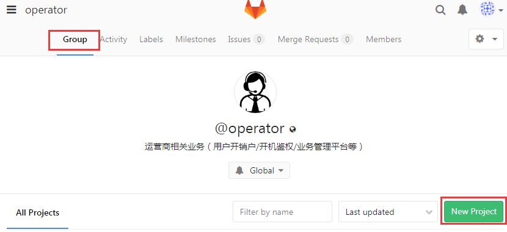
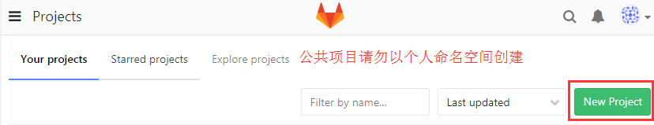
- 选择对应的项目分组后，创建新的工程：
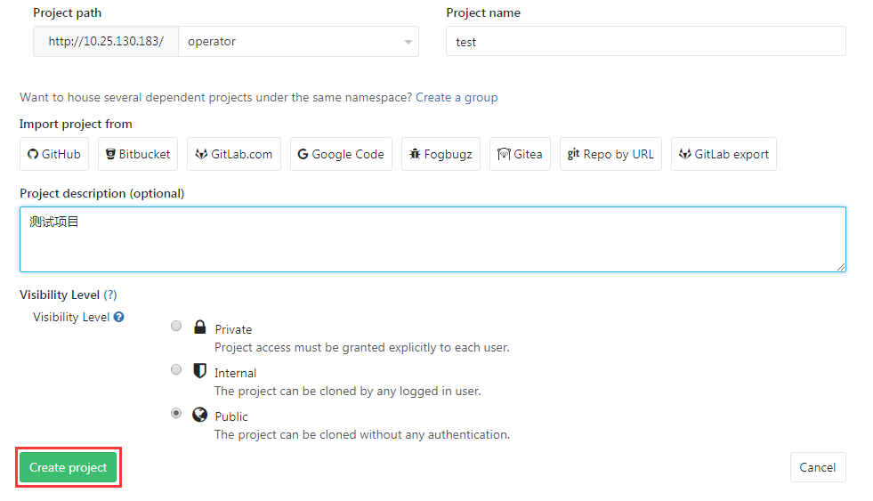
- 工程创建完成，添加必要的.gitignore文件，避免不同的IDE工程配置或编译后的可执行文件污染版本库，.gitignore内容，可参考gitignore模板。
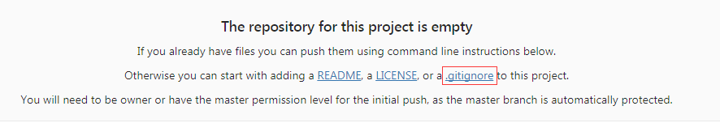
项目开发（develop）
clone一份master主分支，创建develop分支后，即可开始进行项目开发（以下操作均在git工具下直接进行，实际情况下可能更多的是直接通过IDE操作完成，这里不做示例说明）。
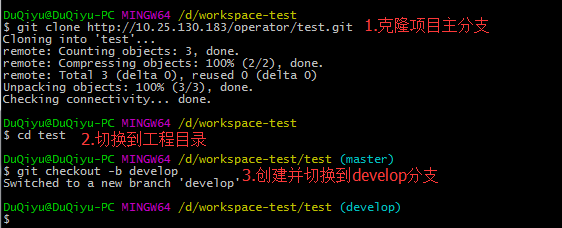
协同功能开发（feature/*）
如果涉及到多人分布式功能协同开发，则会用到feature分支，从最新的develop分支创建feature分支，如下图，创建feature/auth鉴权功能分支：
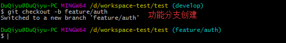
项目发布（release-*）
项目发布前，需要确保测试上线的功能已经合并到develop分支中，同时develop分支也为最新版本。确认develop无误后，可开始创建release分支。如下图，release-1.0.0即为待测试的发布版本。
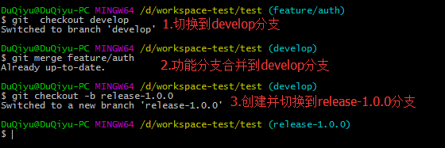
项目测试（release-*）
项目测试期间，bug修复工作直接在release分支上完成即可，测试完成后，此时的release分支即为最新的版本。将release合并回develop，保证开发分支为最新的代码，同时提交master合并请求（master合并只允许项目管理员操作，合并请求提交可参考GitLab合并审查）。
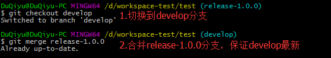
项目发版（master）
由项目管理员将release合并到master主分支，即保证了master主分支的准确性和完整性，完成了项目发版，交由相关人员部署即可。
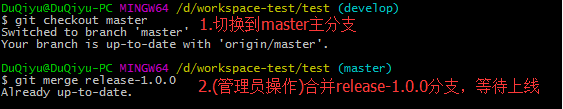
项目维护（hotfix）
当线上代码出现bug时，需基于master分支创建一个hotfix分支，修复后再将hotfix分支合并到master分支并进行发布，同时需将hotfix合并到develop，确保develop的最新。
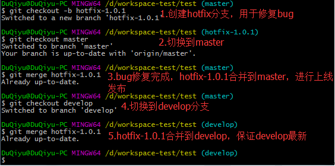
分支开发流程图
传播比较广的一张GitFlow流程图，参考：http://nvie.com/posts/a-successful-git-branching-model/
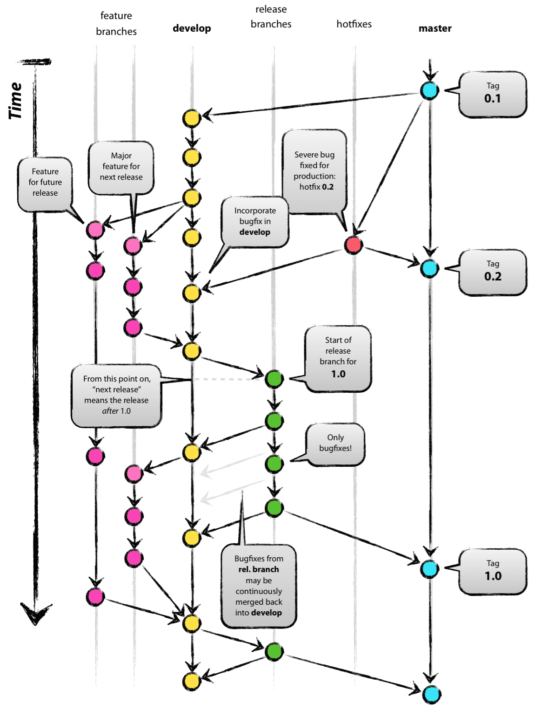
gitignore模板
github上有很多现成的gitignore模板，如：https://github.com/github/gitignore，这里可根据自身项目需求选择。
Java模板参考
1 | # Operating System Files |
GitLab合并审查
项目参与人员较多时，可以通过填写分支合并请求，提交给项目管理员，完成相应的master主分支合并。
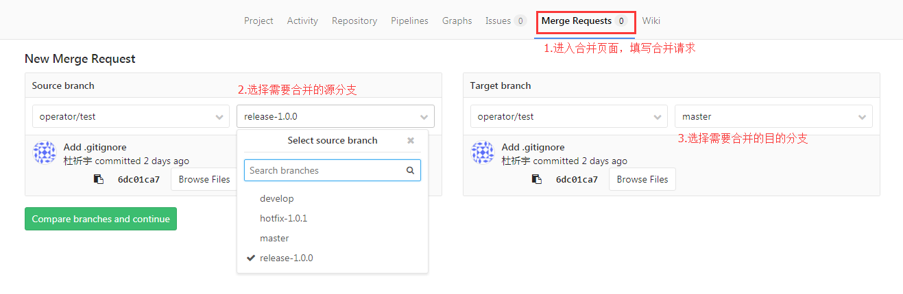
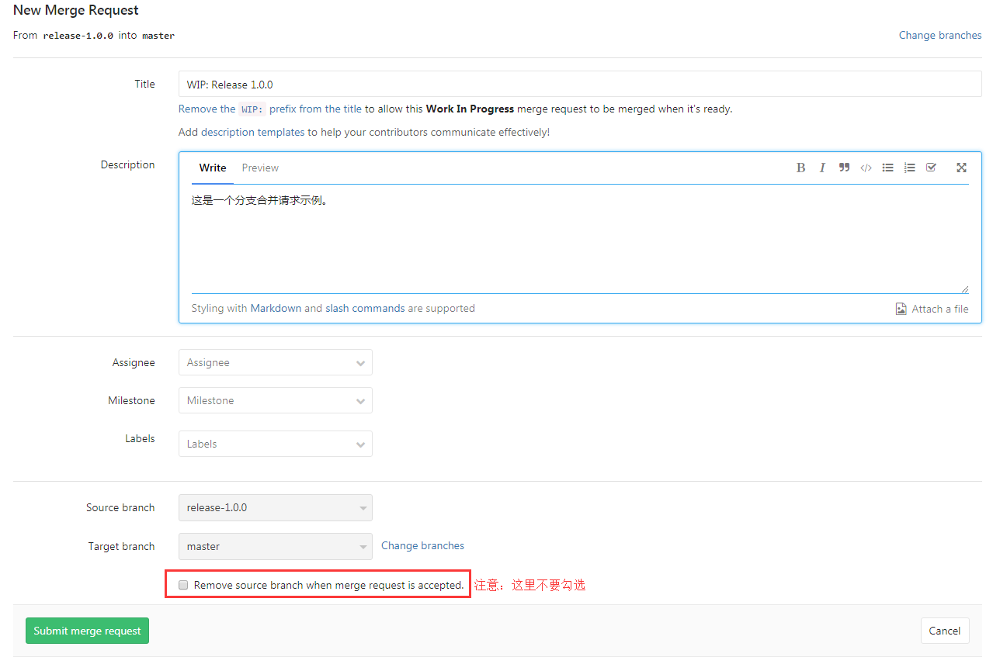